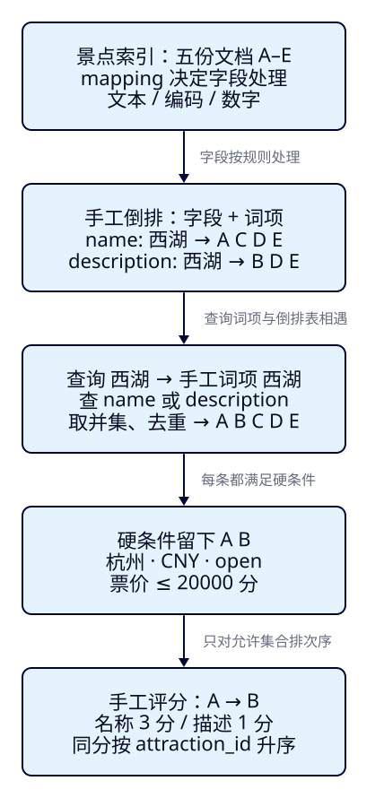
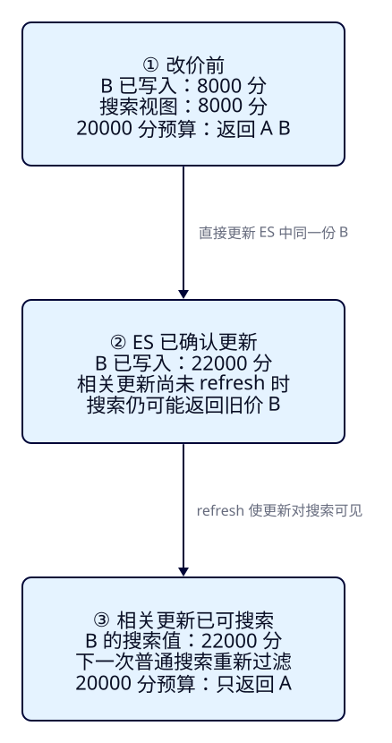

一份景点数据
怎样变成搜索结果？
上一课知道了搜索应该满足什么要求。这一课走进 ES 的搜索数据：一份景点资料怎样被组织成可查找的内容，为什么“西湖”会找到五个候选却只返回两个，以及茶园改价后为什么搜索可能仍看到旧值。用纸笔就能完成，F03 再把这些认识交给真实 ES 验证。
读完这一课，你能推演什么？
- 指认一份 JSON 的字段、文档 ID、所属索引与 mapping，解释它们各自决定什么。
- 用给定的手工词项列出倒排表，算出候选、过滤后的集合与两种排序，指出哪里由规则决定。
- 沿一次改价区分 ES 写入确认与搜索可见，并说明排序无法修复旧值或漏掉的候选。
本课位于“Java 把搜索文档交给 ES，ES 按查询找结果”这一段。展示壳从 F07 开始交付；这里的表格、图和结果都是概念示意。无需安装环境，不要求执行 REST 或 Java。
展开本课目录
1. 案例 f02-c01：同一份数据，为什么有不同结果？
游客仍然输入“西湖”，城市选杭州，门票预算不超过 200 元，只看可游玩景点。搜索名称或描述，先按相关性排。沿用 F01 的五个教学景点，给每份资料加一个短标签，便于在纸上写集合。A–E 只用于阅读，不是 ES 自动生成的编号。
景点价格、状态、词项、分数与结果均为教学设计，不代表真实旅游信息或 ES 实测输出。我们会明确给出模型规则；真实中文分析和评分可能得到不同结果。课程版本仍是 ES 9.4.0，这里没有运行节点、插件或 Java 服务。
| 标签 / name | city_code / ticket_price_fen / status | description |
|---|---|---|
| A · 杭州西湖 | HZ / 0 / open | 杭州的湖泊景点，可沿湖游览。 |
| B · 湖畔茶园 | HZ / 8000 / open | 游览后可前往西湖。 |
| C · 福州西湖 | FZ / 0 / open | 福州的湖泊景点。 |
| D · 西湖夜游 | HZ / 26000 / open | 西湖夜间游览项目。 |
| E · 西湖旧展馆 | HZ / 6000 / offline | 西湖主题展览。 |
所有文档都有 currency=CNY。HZ / FZ 分别是本课程约定的杭州 / 福州编码；open / offline 表示样本的可游玩 / 下架状态。价格按整数人民币分保存，因此预算是 20000 分，B 是 80 元，D 是 260 元。A 和 C 的零价是明确的 0，不是价格未知。
只检查文字时，五份资料都与“西湖”有关系。加上硬条件后，C 城市不对、D 超预算、E 已下架，只剩 A 和 B。我们接下来要解释：ES 怎样表达这份资料、怎样从文字找到候选，以及 A 为什么能排在 B 前面。
2. 资料卡是文档，栏目是字段，放进哪组数据由索引决定
把 A 写成 JSON，就是下面这份文档设计样本。每个字段名后面是它的值：name 存名称，ticket_price_fen 存数值，description 存描述。字段不是一个景点；它是这份景点资料的一部分。本课只保留当前推演需要的字段，暂不使用 F01 中的别名。
{
"attraction_id": "a-hz-xihu",
"name": "杭州西湖",
"city_code": "HZ",
"ticket_price_fen": 0,
"currency": "CNY",
"status": "open",
"description": "杭州的湖泊景点，可沿湖游览。"
}我们计划把 A–E 放在名为 travel-attractions 的索引中。这个名字指定“在哪组搜索数据里找”；索引组织文档及其字段规则。它不是“西湖”这个词的名称，也不是某一份景点资料的编号。索引还会用适合检索的内部结构组织数据，稍后用倒排表解释其中一个概念。
attraction_id 是这份数据里的业务 ID 字段；ES 另有用来定位文档的元数据 _id。两者不会因为拼写像 ID 就自动相等。我们约定后续写入时显式把业务 ID 用作 _id：A 为 a-hz-xihu，B 为 a-hz-tea，C 为 a-fz-xihu，D 为 a-hz-night，E 为 a-hz-old。在本课这一个索引内，指定索引名和对应 ID，就能指出我们谈的是哪份资料；实际写入方式在 F03 实现。
| 你指向什么？ | 本课的例子 | 它回答的问题 |
|---|---|---|
| 索引 | travel-attractions | 在哪组数据里搜索？ |
| 文档与 _id | A / a-hz-xihu | 具体是哪一份景点资料？ |
| 字段和值 | name = 杭州西湖 | 这份资料的哪个栏目，写了什么？ |
| 查询 | 找“西湖”，同时满足杭州、预算、状态 | 从这组数据里怎样选出结果？ |
3. 都写在 JSON 里，为什么还要 mapping？
名称 杭州西湖 和编码 HZ 在 JSON 中都是字符串，但用途不同：游客可能只记得名称的一部分；城市编码则应该按完整值精确筛选。价格 8000 要做数值比较，不能把它当作一段文字处理。mapping 就是索引中的字段规则，告诉 ES 各字段按什么类型、怎样建立可查询的数据。它不是某一份景点的内容，也不是“名称比描述重要”的排序规则。官方 mapping 说明。
| 字段 | 本课选择的类型 | 为什么这样分工？ |
|---|---|---|
| name / description | text | 分析文字，按词项匹配文本意图。 |
| attraction_id / city_code / currency / status | keyword | 将编码作为完整值使用；本课不配置 normalizer。 |
| ticket_price_fen | integer | 整数分，按数值与预算比较。 |
这张表是概念设计，还不是建索引请求。text 的文字分析会生成可检索的词项；keyword 适合本课的完整编码；数值字段支持大小关系。text 与 keyword 官方说明解释了它们的不同用途。字段名带 _fen 并不会让 ES 自动换算货币，应用与数据约定仍然负责单位。
ES 可以按新字段的值自动推断 mapping，称为动态映射；也可以提前声明，称为显式映射。自动推断方便开始，却不知道“这个整数其实是人民币分”或“这个字符串是城市编码”的业务意图。F03 先用最小显式规则完成首搜，F04 再讨论更多类型与错误边界。本课先抓住因果：资料内容相同，字段处理规则不同，可查询的东西也可能不同。
4. 把文字变成可以对照的词项
想查“西湖”，总不能只给每份资料贴一个“有文字”的标记。先把文字按规则切分、处理成小单元，这个过程叫文本分析；分析产生的单元常称 token，其中用于匹配的文本叫词项（term）。分析器 analyzer 是这一组处理规则，不是景点数据本身。
为了只观察“由文档到词项”的关系，我们人工指定下面的切分。本模型省略功能词和标点，不模拟 token 位置、词频或字符偏移；它不是默认 standard 分析器的输出，也不是任一中文插件的效果。真实分词在 F13–F17 用实际分析结果比较。
| 文档 | name 的手工词项 | description 的手工词项 |
|---|---|---|
| A | 杭州 / 西湖 | 杭州 / 湖泊 / 景点 / 沿湖 / 游览 |
| B | 湖畔 / 茶园 | 游览 / 前往 / 西湖 |
| C | 福州 / 西湖 | 福州 / 湖泊 / 景点 |
| D | 西湖 / 夜游 | 西湖 / 夜间 / 游览 / 项目 |
| E | 西湖 / 旧 / 展馆 | 西湖 / 主题 / 展览 |
查询文字也要变成可对照的形式：本模型将输入“西湖”处理为词项 西湖，随后在选定字段中查它。真实 ES 中，全文查询也有搜索时的分析规则；索引时和搜索时的规则需要配合，但不要求所有场景都用同一个分析器。官方索引与搜索分析说明。
为什么要强调规则？假设另一个模型只把 A 的名称记成一个完整词项 杭州西湖，查询却只产生 西湖，这两个词项就不相等。虽然肉眼在原名称里看到了子串，也不能按当前的词项查找规则认定命中。类似地，本模型没有“湖”这个独立词项，输入“湖”若只产生 湖，不会自动匹配 西湖 或 湖泊。这是模型的词项匹配边界；其他查询或分析设计可以有不同表现。
5. 从“文档有哪些词”倒过来问“这个词在哪些文档”
上表以文档为起点，列出它的词项。现在把方向倒过来：对每个字段中的词项，记下有哪些文档包含它。这样的“字段 + 词项 → 文档集合”叫倒排。遇到查询词项时，可以沿对应条目找到候选，不必把概念理解成每次扫描所有 JSON 原文。实际内部结构与优化不在本课展开。
| 字段 | 手工词项 | 包含它的文档 · 模型倒排表节选 |
|---|---|---|
| name | 西湖 | A、C、D、E |
| description | 西湖 | B、D、E |
| name | 茶园 | B |
| description | 游览 | A、B、D |
本次规则是“name 或 description 包含查询词项”。于是拿到两个集合：名称里有 A、C、D、E，描述里有 B、D、E。取并集并去重，文本候选为 A、B、C、D、E。D、E 出现在两个字段中，仍各是一份文档，不变成两条景点结果；匹配多个字段可以影响评分，但不会凭此新增景点。

倒排表里的文档集合只是教学简化。真实文本索引还可以包含支持评分或短语查询的信息。名称和描述的同一个词项属于不同字段；本课也没有让城市、价格或别名参与这次文本检索。若规则改为“只搜名称”，B 就不再是候选。召回字段不同，即使原文一字未改，结果也会改变。
原始文档内容与用于检索的结构也要区分。常规存储模式下，_source 保留提交的文档内容，供取回和展示；倒排结构用于按词项查找。分析文字不等于把原资料中的 name 改写成词项数组。官方 _source 说明。这里仅建立用途上的区别，不展开其他 source 模式。
6. 候选不等于最终命中，集合与次序要分别判断
先满足所有硬条件
对 A–E 检查四条要求：city_code=HZ、currency=CNY、ticket_price_fen ≤ 20000、status=open。同一条文档必须全部满足；少一个就不允许返回。本模型所有价格都已知，后续遇到缺价时不能把缺失擅自当成 0。
| 文本候选 | 城市 / 币种 | 价格 / 状态 | 能进入结果吗？ |
|---|---|---|---|
| A | HZ / CNY ✓ | 0 ≤ 20000 / open ✓ | 保留 |
| B | HZ / CNY ✓ | 8000 ≤ 20000 / open ✓ | 保留 |
| C | FZ / CNY，城市不符 | 0 / open | 排除：城市 |
| D | HZ / CNY ✓ | 26000 > 20000 / open | 排除：预算 |
| E | HZ / CNY ✓ | 6000 / offline | 排除：状态 |
集合可以写成“文本候选 ∩ 城市合格 ∩ 币种合格 ∩ 预算合格 ∩ 状态合格 = {A，B}”。这些条件判断是否允许出现，过滤本身不提供相关性加分。真实 ES 的查询与过滤上下文在 F05–F06 用 DSL 表达；官方说明区分了评分与是非判断。上述先后是方便手算的逻辑顺序，不意味着 ES 必须先收集全部文本候选再逐条过滤。
再决定这些结果里先看谁
给出一个手工评分规则：名称包含查询词项加 3 分，描述包含它加 1 分；每个字段只加一次，分数相加。同分时按 attraction_id 升序。A 名称命中而描述未命中，得 3 分；B 只在描述命中，得 1 分，相关性模型顺序为 A → B。这是一条为了看懂排序而设计的规则，不是 ES 默认评分，也不是 BM25 算式或实际 _score。
| 文档 | 名称分 + 描述分 | 手工总分 | 本次结果 |
|---|---|---|---|
| A | 3 + 0 | 3 | 第 1 |
| B | 0 + 1 | 1 | 第 2 |
| C | 3 + 0 | 3 | 城市不符，排除 |
| D | 3 + 1 | 4 | 超预算，排除 |
| E | 3 + 1 | 4 | 已下架，排除 |
把被排除的文档也算一遍，是为了看清一个反例：D、E 分数比 A 高，仍不能突破预算或状态。评分衡量本次查询下的匹配偏好，不是文档固定拥有的景点品质分。真实评分还取决于分析、查询、语料统计等条件；F18 再通过实际解释结果研究它。
游客若切换“价格从低到高”，就按 ticket_price_fen 升序、同价按 attraction_id 升序排列，相关性分数不再决定这条排序。A 为 0、B 为 8000，所以本例碰巧仍是 A → B。次序相同不表示排序规则相同。保持全部硬条件，将 B 的价格临时改为 0 做对照：两份同价，业务 ID 中 a-hz-tea 在 a-hz-xihu 前，价格排序变为 B → A；文本评分仍为 A → B。做完把 B 恢复到 8000 分。
最后取回相应文档字段，交给 Java 与网站形成卡片。符合本次查询并被搜索响应返回的文档叫命中（hit）。若一次只返回 1 条，相关性模型的第一页只有 A，却不代表 B 不符合查询；结果集合、排序与这一页返回的命中要分别看。具体返回窗口和分页在 F11 学习。
7. 案例 f02-c02：已经写入新价，为什么还可能搜到旧价？
恢复基础样本后，运营把 B 从 80 元改为 220 元：即 8000 → 22000 分。其余字段与查询都不变，新价超过 20000 分预算。现在不要换排序规则，而要问这一次搜索在读哪个时点的数据。
先隔离一个边界：本案例假设直接更新 ES 中同一份 B，ES 已确认这次更新；没有数据库同步、并发写入或旧分页视图。写入确认说明这次写操作完成了响应承诺，但不单独保证更新立即对搜索可见。ES 的搜索使用可搜索的视图，相关更新经过 refresh 才能进入新的搜索视图。这种写入与搜索可见存在间隔的性质称为近实时搜索。官方近实时搜索说明。

| 时点 · 模型状态 | B 的写入值 / 搜索可见值 | 相同预算查询怎样判断？ |
|---|---|---|
| 改价前 | 8000 / 8000 | 返回 A、B |
| ES 确认更新；相关更新尚未对搜索可见 | 22000 / 仍可能为 8000 | 仍可能返回旧价 B |
| 相关更新已 refresh；再发普通搜索 | 22000 / 22000 | B 超预算，只返回 A |
按 ID 取文档与搜索也可能读到不同状态：ES 的文档 GET 默认具有实时读取语义，不依赖搜索 refresh，不能用“按 ID 已读到新价”证明一次搜索也已读到新价。官方 GET 说明。本课只理解边界，F12 再受控观察两者；refresh 是搜索可见的边界，不等于磁盘提交或备份完成。
真实运行中，自动刷新可能已经发生；写请求也可以选择等待相关更新对搜索可见。因此我们说“可能仍看到旧价”，不会把写入响应之后的旧搜索当作必经步骤。刷新调度与负载等都会影响时间，不能承诺“写完一秒内一定搜到”。F03 首搜会显式处理可见性，避免把操作速度当成实验前提。
再放回 F01 的完整网站：如果业务数据库改成 22000 分，而更新尚未传到 ES，搜索旧值首先属于数据库 → ES 的同步问题；ES 已接收新值后，搜索仍未看到则要另查搜索可见性。refresh 不能把还没传来的更新变出来。排序同样无法修复旧价：它只能排列当前查询看到的内容。持续同步在 F36–F42 学习。
8. 独立推演：先写集合与原因，再展开答案
关掉答案，用纸笔完成。下面沿用本课词项与评分规则，不运行 ES。完成后要能说清“修改了什么、哪些结果变了、为什么”，而不只记住 A 排第一。
1. “travel-attractions、a-hz-xihu、name、mapping”分别指什么？业务字段 attraction_id 会自动成为 _id 吗？
travel-attractions 是计划中的索引名；a-hz-xihu 是 A 的业务 ID，并拟在写入时显式用作 ES _id；name 是文档字段；mapping 定义索引内字段的处理规则。业务字段不会自动变成元数据 _id。本课 JSON 是文档设计样本，不是查询或实际响应。
2. 改为只查 name 中的“西湖”，保留杭州、预算、币种与状态条件。候选和最终集合各是什么？
名称倒排条目是 {A，C，D，E}。B 的名称词项不含西湖，因此不进入文本候选。再按硬条件排除 C、D、E，结果集合只有 {A}。增加 B 的描述权重不会让它进入只查询名称的候选。
3. 只把预算从 200 元改到 260 元，仍查名称或描述。哪些结果留下，手工评分顺序是什么？
预算改为 26000 分且边界是“≤”，所以 D 合格。C 仍城市不符，E 仍下架。允许集合为 {A，B，D}；D 得 4 分、A 得 3 分、B 得 1 分，顺序为 D → A → B。按价格升序则为 A → B → D。同一集合可有不同次序，评分不代表旅游品质。
4. 原文“杭州西湖”肉眼包含“西湖”，但索引侧只有词项“杭州西湖”，查询侧只有“西湖”。按这个词项模型会匹配吗？
不会，两个词项不相等。先检查索引侧和查询侧的分析规则，不能靠提高排序权重制造不存在的候选。真实系统需要实际分析结果和具体查询来判断，不能把本课手工中文切分当成默认 ES 输出。
5. B 从 8000 改为 22000 分，按 ID 已读到新价，相同搜索仍返回 8000。你能据此说更新失败吗？
不能。按 ID 实时读到新值，与搜索视图仍使用旧值可以同时成立；要核对搜索可见性、所用视图及相关更新是否已经 refresh。在本案例的单一更新、无并发、下一次普通搜索前提下，相关更新可见后 B 因超预算而被排除。若只有数据库改价、ES 尚未接收，问题在同步环节，refresh 不能代替同步。
6. 新增 F：名称词项只有“茶园”，描述词项含“西湖”，HZ / CNY / 5000 分 / open，业务 ID 为 a-hz-tea2。不改查询，求相关性模型与价格模式的顺序。
F 通过描述进入候选，所有硬条件合格。手工分数 A=3、B=1、F=1；同分按业务 ID 升序，a-hz-tea 在 a-hz-tea2 前，所以相关性模型为 A → B → F。价格升序为 A（0）→ F（5000）→ B（8000）。这是未出现在主案例中的对照：集合相同，次序可以不同。
怎样从头重做本课推演？
先回到五份固定样本，恢复 B=8000 分、预算=20000 分、名称或描述检索；不保留同价、加预算或新增 F 的临时改动。重新列词项与倒排表，求候选并集，逐条核对四个硬条件，计算分数与排序。再单独把 B 改为 22000 分，分别写出改价前、相关更新尚未可搜索、相关更新可搜索后的判断。概念重做不包含启动或删除 ES 资源；F03 的真实实验会另给点名清理与重做流程。
本课陷阱
它们是为了让你算清集合与次序而公开指定的规则。真实分析器可能切出不同词项，真实评分取决于具体查询与语料，后面要以实际观察校对。
先核对查询字段、索引词项、查询词项与条件。原文可见与可检索词项相等是不同判断；没进入候选的资料，排序无法挽回。
HZ 是完整编码，200 元要转换为 20000 分。明确零价与缺价不同；keyword 和数值规则不应靠字段拼写或显示文本猜测。
分别核对写操作、文档读取与搜索视图；数据库同步再单独检查。refresh 既不能传来未同步的数据，也不代表磁盘提交或备份。
速记：先看规则与集合，再看次序与时点
| 概念 | 用本课样本解释 |
|---|---|
| 文档 / 字段 / 索引 | A 是景点资料，name 是栏目，travel-attractions 是拟搜索的数据组。 |
| mapping | 字段处理规则；text 分析文字，keyword 使用完整编码，integer 比较整数分。 |
| 分析 / 倒排 | 文档文字 → 字段词项；字段 + 词项 → 文档集合，查询侧也要形成可匹配的形式。 |
| 候选 / 过滤 | 文本候选 A–E；杭州、CNY、≤20000 分、open 的交集只留下 A、B。 |
| 排序 / 命中 | 手工相关性 A → B；显式价格有另一把尺子。返回页里的命中不等于全部合格集合。 |
| 写入 / 搜索可见 | B=22000 已确认写入，不单独保证搜索已读新价；相关更新可见后普通搜索排除 B。 |
你现在能从资料推演搜索，却还没有看到真实 ES 认可什么 mapping、产生什么结果。下一课 F03 · 让 ES 在本机运行，并查到第一条景点：启动隔离节点、声明最小字段、固定 ID 写入、处理可见性、核对真实命中，再清理重做。先完成一条真实搜索，不在第一轮同时加入所有中文和评分策略。
本课资料、依据与实际验收
固定文档与人工模型 · D2 图源及生成记录 · 内容与 HTTP 阅读验收。本课两案例是人工推演；ES / Java 执行验收不适用，没有启动实验后端。正文所引官方文档用于概念依据，当前版本特有的参数与默认值在后续执行课另行核验。